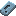
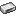
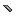

勘探
勘探
你還記得你是在哪裡撿到那些小礦粒的，對吧？尋找更多礦石需要花費大量精力來勘探和開採。現在，你應該已經通讀礦石和礦物這一章節。你應該明白，如果你在尋找特定的礦石，則必須先找到它生成的岩石型別——不論是就在你家門口，或是千里之外。
當僅靠撿拾小礦粒不能滿足你的發展需要時就應考慮開始勘礦了。
- 小礦粒只會生成在礦脈水平 15 格以內，垂直 35 格以內的地表上。當地表上有一片礦粒時，它們的幾何中心的正下方很可能就有一支礦脈。
- 有些時候，礦石也會暴露在斷崖或水底，這種礦脈就很好發現了。

勘礦鎬
如果你挖了好久都沒有找到想找的礦石或礦物（礦物不會生成礦粒），那麼就是時候做一把勘礦鎬了。勘礦鎬會搜尋點選的塊中心 25x25x25 的區域，並報告所找到礦石的數量和型別。


你可以用粘土按上圖塑形成一個未燒製的勘礦鎬頭模具。



黃白****
模具塑形完之後還需要燒製。
將液態金屬倒入到燒製好的模具中就能鑄造出勘礦鎬了。


等級 III
勘礦鎬頭也可以在砧上使用任何可以製造工具的金屬錠鍛造而成。
最後用木棍和工具頭在合成欄合成就能做出勘礦鎬了。
勘礦鎬說有礦就是有礦，它說沒礦也有可能有礦。更高等級的工具會降低甚至完全消除誤報的機率。
用同一把勘礦鎬點選同一個方塊不會改變報告的結果。
如果在勘礦鎬的周圍有多種礦物，它只會選擇其中一種報告。
勘礦鎬會報告以下幾種結果之一：
- 沒發現什麼有意思的。（可能是假陰性）
- 發現痕量
- 發現少量
- 發現中量
- 發現大量
- 發現巨量
發現巨量表明至少有 80 個方塊。